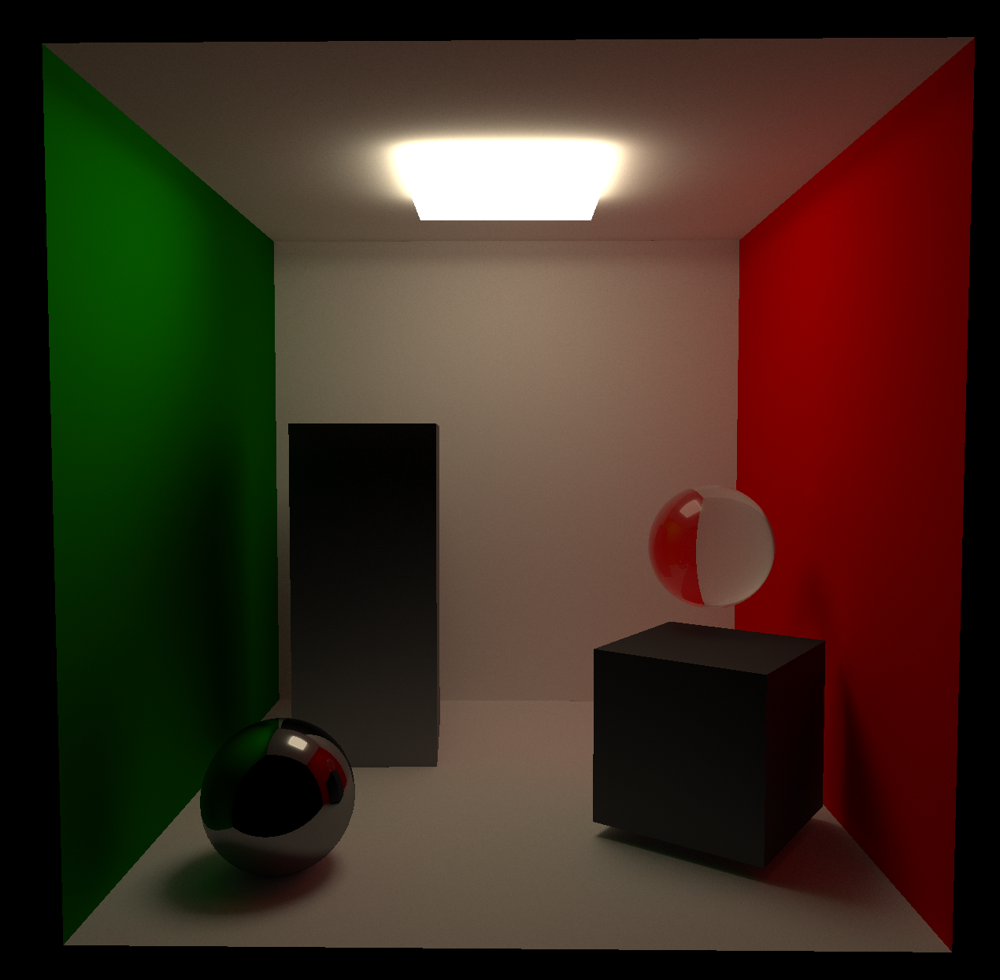

AstraEngine is a C++ library to help you get create a 3D graphical application with hardware-accelerated ray-tracing support. It started as a Master's Thesis for my Software Development / Computer Graphics Master. However, I still continue to work on it, adding new features from time to time.
One of the main goals was to make it simple enough so it could also be used, at least partly, in Computer Graphics courses. Since my previous experience with this kind of software provided by professors was not that great.
The other main objective was to support hardware-accelerated ray-tracing, since it was a particular interest of mine and my tutor. It's also an interesting technology to learn, specially with the current state of modern GPUs with broad support for it.
You can check the code at AstraEngine Repo and checkout out some examples that use the library at samples repository.
The latest upgrade has been the creation of a pathtracer. It is currently a naive implementation but one that can create really realistic images.
Cornell Box, pathtraced with metal and glass spheres:
Blender's Suzanne, as a glass object. Illluminated by a light source above it:
A complete dark scene, just illuminated by the lights of a car:
When I first started this project, 11 months ago, I had never used Vulkan before. I had worked a little with OpenGL but Vulkan is a whole beast of its own.
I first started with the classic Vulkan Tutorial. After days (and weeks) working on it, trying to understand every bit of it, I managed to get my first ever triangle in Vulkan.

A lot of time has passed since that moment but I'm still proud of it.
Later I got to work with 3D models and some basic camera manipulation. At this point I was modifying the basic tutorial code to get to know it more. However I still did not understand it quite well.
After that, I was kind of stuck. I didn't know how to organize the code and interacting directly with the API without any abstractions was difficult. Besides, one of my main goals with this project was to work with the Ray-Tracing Vulkan Extension, so I needed to start working on that.
A couple of months passed, where I was in a weird spot: I didn't really know how to proceed and didn't have the time either. I finally decided to take the Nvidia Ray-Tracing Tutorial for Vulkan. This allowed me to get to speed and actually grasp how Vulkan worked.
Following this tutorial I was able to get my first rasterized and ray-traced scene.
I know had a base frame where I could work. I started adding things like ImGuizmo (ImGui was already in the base project). And started to learn on how to manipulate transforms, when to rebuild the acceleration structures and things like that.
On the graphics side of things, I added ray-traced shadows and reflections. Both of which were quite easy to implement given the nature of ray-tracing. This allowed me to have full-working mirrors in the scene. The difference between getting mirrors to work in ray-tracing vs rasterization is huge.
I started adding new abstractions so that I could work better. One of the goals is for the library to be simple to use so I made several classes that worked together to achieve that.
The most important ones are: